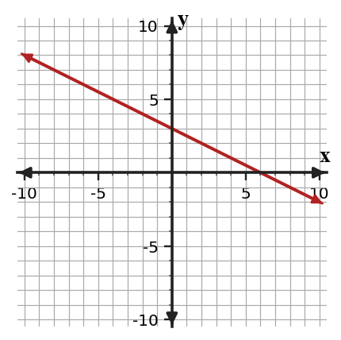

3.
The expression $(x+2)(x+5)$ and the area model are meant to match. Find the mismatch in the model, explain it, and revise the incorrect cell.

This Extra Practice focuses on Section 4.4: Polynomial Operations. Use the current problems to practice how to multiply, add, subtract, and interpret polynomial expressions using structure, then use the spirals to keep prior skills active.
What area-model cell comes from multiplying $x$ by $5$?
Simplify $(6x^2-x+8)-(2x^2+5x-3)$.
The expression $(x+2)(x+5)$ and the area model are meant to match. Find the mismatch in the model, explain it, and revise the incorrect cell.
Create a rectangle area model for $x^2+8x+12$ and a different rectangle area model for $x^2+7x+12$. Show all four products for each model and explain why the middle terms differ even though the constant terms are the same.
Performance notes: Evaluate operation choice, equivalent forms, and whether the expression structure matches the context or area model.
For $y=7x+2$ and $y=7x-9$, state what feature is the same.
A table increases by $12$ for every $3$ in $x$. What slope should be used to compare it with an equation?
Use the cost scatter plot to estimate a linear model. Then decide whether predicting at $20$ minutes is interpolation or extrapolation.

A model predicts test score as $S=2.8h+62$, where $h$ is study hours. Find the predicted score for $6$ hours and explain why the model should not be used for $40$ hours.
Compare this graph with the equation $y=-\frac{3}{4}x+5$. Decide whether the graph could represent the equation, and support your answer with slope and intercept evidence.

A student graphs $y=-2x+6$ by plotting $(0,-2)$ first and then using a rise of $6$. Critique the error and describe a correct graphing strategy.
A model for cost is $C=6m+4$, but the scatter plot suggests costs rise faster after $8$ minutes. Revise the model or describe a limitation for predictions beyond $8$ minutes.
Design a context for data that would have a negative linear association. Give five data points, a line-of-fit equation, and one prediction question the model can answer.
Which system is more substitution-ready: $y=2x+1$ with $x+y=10$, or $3x+2y=12$ with $5x-y=1$?
Substitute to determine the solution type, then interpret what that result means about the graph relationship.
$$\begin{aligned}y=\frac{1}{2}x+3\\x-2y=-6\end{aligned}$$
The graph and inequality statement are both being used for a budget model.

Compare the graph to the statement “allowed choices satisfy $y\ge -\frac{1}{2}x+2$.” Explain how the boundary and a test point support or challenge the statement.
Create an inequality that could model this cafeteria constraint: a tray can hold at most 12 total apples and oranges. Let $a$ be apples and $o$ be oranges.